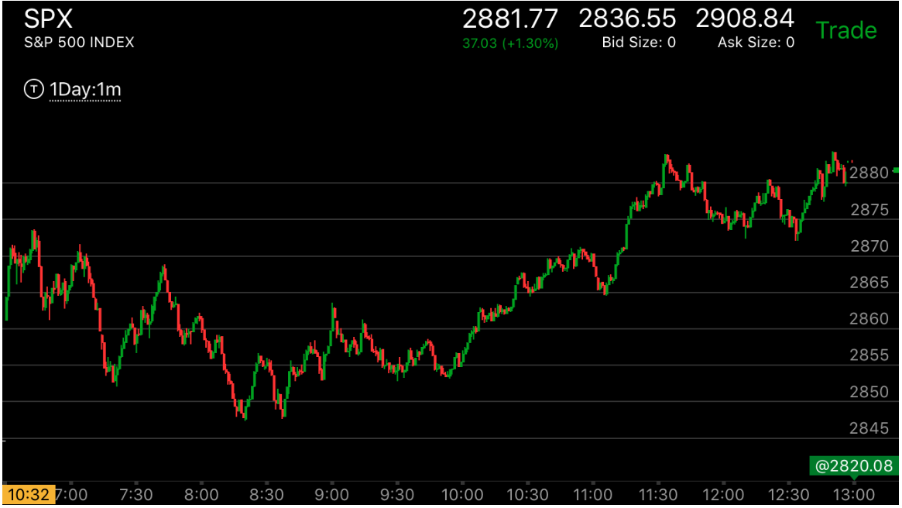

第二段走势反弹的幅度不如前面的一次或者几次，这样形成了加速走势。
- 第二段反弹不如前面的反弹，这样形成了加速走势。前面下跌或者上涨的反弹很大。然后在某个时候，它的反弹变小，或者只有一段，
没有第二段了。这样就形成了加速走势。
- 这个走势可以预先放好一个单子，在双底/双顶点。它常常速度很快，不到一分钟。但是如果单子很久没有执行，那么应该取消。要考虑时间的因素。只有快速的双底/双顶
才是真的。

图示：
7：20新低后，反弹幅度很大。8：20新低后，反弹幅度很小。这样就形成了加速走势。它一定至少要超过前面的反弹的高点。